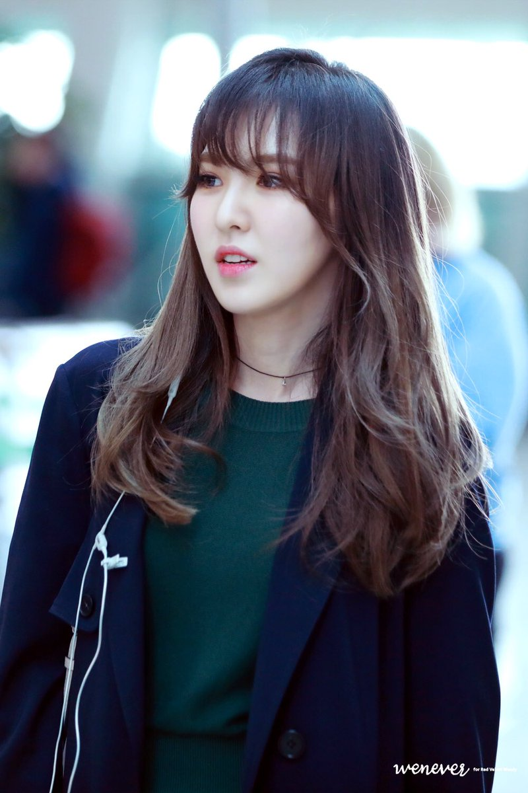

본명 : 배주현
출생 : 1991년 3월 29일, 대구광역시 북구 칠곡
국적 : 대한민국
신체 : 158cm, 45kg, 225mm, A형
포지션 : 센터, 리더, 메인래퍼, 서브보컬, 리드댄서
가족 : 부모님, 여동생
본명 : 강슬기
출생 : 1994년 2월 10일, 경기도 안산시
국적 : 대한민국
신체 : 161cm, 44kg, 230mm A형
포지션 : 리드보컬, 메인댄서
가족 : 부모님, 오빠

본명 : 송승완
출생 : 1994년 2월 21일, 서울특별시 성북구
국적 : 대한민국
신체 : 158cm, 40kg, 235mm, O형
포지션 : 메인보컬
가족 : 부모님, 언니
본명 : 박수영
출생 : 1996년 9월 3일, 제주특별자치도 제주시
국적 : 대한민국
신체 : 167cm, 53kg, 230mm A형
포지션 : 리드래퍼, 서브보컬
가족 : 부모님, 여동생 2명
본명 : 김예림
출생 : 1999년 3월 5일, 서울특별시 강북구
국적 : 대한민국
신체 : 158cm, 49kg, 230mm O형
포지션 : 서브래퍼, 서브보컬
가족 : 부모님, 여동생 3명